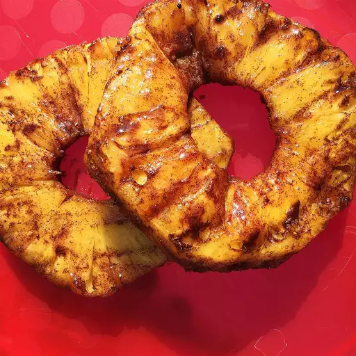

Brazilian Grilled Pineapple Recipe

Description
Great side for kabobs and steak. Just like a Brazilian steakhouse!
Prep Time: 10mins, Cook Time: 10mins, Servings: 6
Ingredients
- 1 cup brown sugar
- 2 teaspoons ground cinnamon
- 1 pineapple - peeled, cored, and cut into 6 wedges
Directions
- Preheat an outdoor grill for medium-high heat and lightly oil the grate.
- Whisk brown sugar and cinnamon together in a bowl.
- Transfer into a large resealable plastic bag. Add pineapple wedges to the bag;
shake well to coat each wedge.
- Grill pineapple wedges on the preheated grill until heated through, 3 to 5
minutes per side.
Nutrition Facts (per serving)
- Calories: 225
- Fat: 0g
- Carbs: 66g
- Protein: 1g